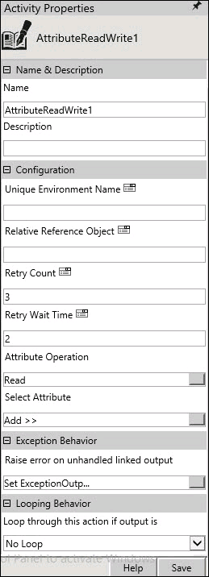

No
Use the AttributeReadWrite activity to perform the read and write operation between AVEVA Work Tasks and ArchestrA IDE.
Activity Properties:
You can configure the AttributeReadWrite activity by specifying appropriate values for the properties in the Activity Properties area. Click Activity Properties in the toolbar or select the Properties option from the short-cut menu of the AttributeReadWrite to access the Activity Properties.
The following image shows the Activity Properties dialog box:

Name & Description
You can use these properties to specify the name and description for the activity.
Property Type: Mandatory
Property Type: Optional. Set this property only if required.
Configuration
You can use these properties to configure the functionality of this activity.
Or
See also: Configuring AttributeReadWrite Activity to Perform Read Operation and Configuring AttributeReadWrite Activity to Perform Write Operation.
Or
For more information, see Relative Referencing.
Property Type: Optional. Set this property only if required.
Property Type: Optional. Set this property only if required.
Looping Behavior
You can use this property to specify the looping behavior of the activity.
Loop through this action if output is: This property is used to specify the condition for looping the activity by selecting an activity output from the drop down.
Property Type: Optional
Exception Behavior
Each activity has the Raise Error on Unhandled Linked Output property. Click this property to see the default configured mapped error outputs in red with their check boxes selected.